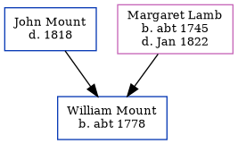

The child of John Mount and Margaret Lamb, William Mount, the fifth times great-uncle of Nigel Horne, was born in Kent, England c. 17781 and baptized in St Nicholas-at-Wade, Kent, England on Oct 11, 1778.
Kent, England, Tyler Index to Parish Registers, 1538-1874 Online publication - Provo, UT, USA: Ancestry.com Operations, Inc., 2010. This collection was indexed by Ancestry World Archives Project contributors.Original data - Frank Watt Tyler. The Tyler Collection. Canterbury, Kent, England: The Institute of Herald
Family Tree

Map
Generated by Ged2Site. Last updated on Jul 20, 2025